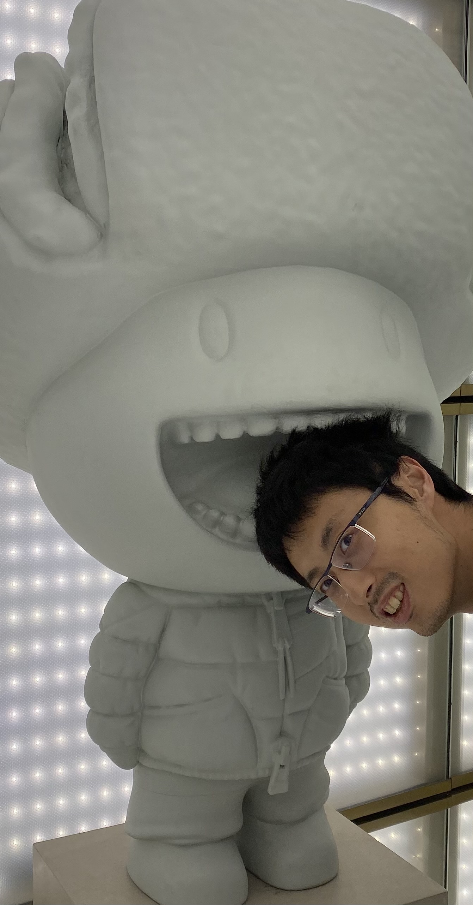

Office: Room 509A, Blocker Building, TAMU
Contact info
Email: sming AT math DOT tamu DOT eduOffice: Room 509A, Blocker Building, TAMU
About me
I am currently a postdoc at the Department of Mathematics, Texas A&M University, mentored by Tian Yang.I obtained my Ph.D. degree in 2019 at the Department of Mathematics
University of California, Davis under the supervision of Greg Kuperberg.
I recieved my B.S. degree in both Economics and Mathematics in 2013 from the Wuhan University.
I am interested in Quantum algebra, especially its applications in Geometric topology, Representation theory and Group theory.
Here is my CV.
Publications and preprints
- 2. Braidings of Fusion Categories from Type A
Joint with Zhaobidan Feng and Eric Rowell
In preparation
- 1. On TQFT representations of mapping class groups with boundary
Joint with Greg Kuperberg (arXiv:1809.06896)
arXiv preprint.
Current teaching
- Math 304 and 323
Previous teaching
- MAT 21B Calculus: Integral Calculus, Summer Session I, UC Davis, 2016.